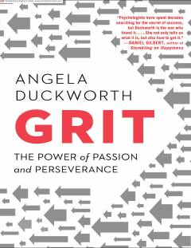

GEMuvaffaqiyatga erishishda iste'doddan ko'ra qat'iyat va ehtiros muhimroq ekanligi haqidagi kitob.
Ushbu kitob muvaffaqiyatga erishishda tug'ma iste'doddan ko'ra ko'proq ehtiros va qat'iyatlilik muhimroq ekanligini ilmiy tadqiqotlar va hayotiy misollar orqali tushuntiradi. Anjela Dakvort o'z oldiga qo'ygan maqsadlarga erishish uchun qanday qilib chidamlilik va intizomni shakllantirish bo'yicha amaliy strategiyalarni taqdim etadi.